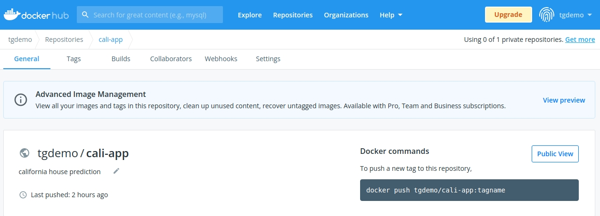
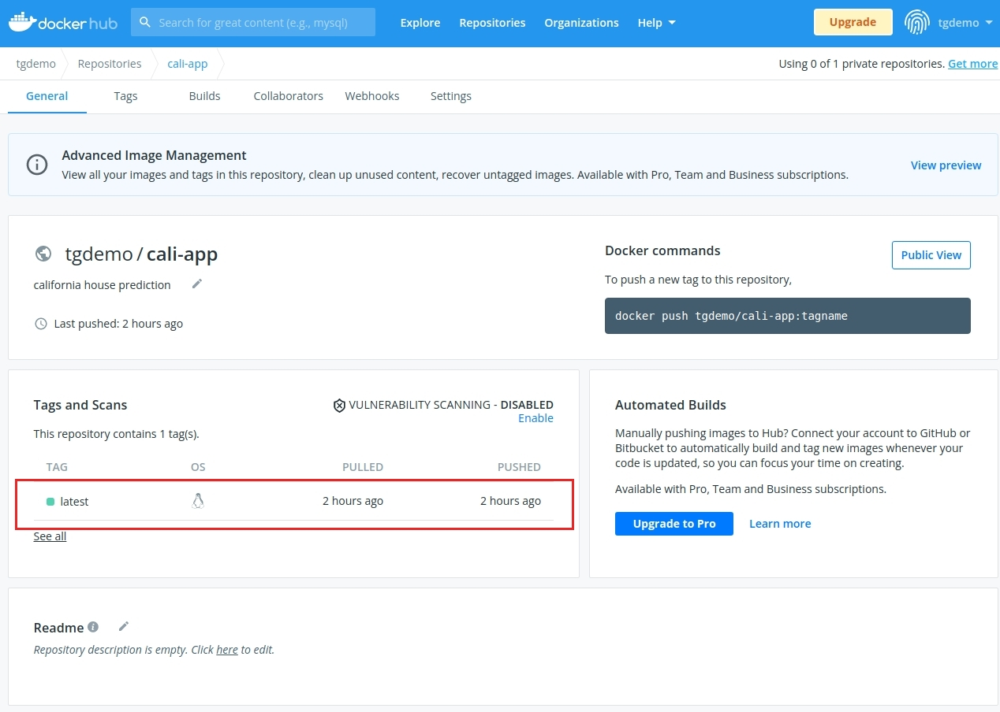

Setup a dockerhub account
Sign up for a free account
Go to hub.dockerhub.com
Sign up for a free account
Create a secret
Create a public repository
Create a public repository, call it
cali-appIn your Terminal login to your docker repository
$ docker login -u <repo-name> Password: <enter password or secret key>
Push your image
$ docker tag cali-app:latest tgdemo/cali-app:latest $ docker push tgdemo/cali-app:latest Using default tag: latest The push refers to repository [docker.io/tgdemo/cali-app] 453620360c4b: Preparing 8b29f2c41d83: Preparing 44af0f409ada: Preparing 226c2f38da62: Preparing 2909e5a2659d: Preparing 48576ca3aa45: Waiting eec2988c9478: Waiting e7a951258ef9: Waiting 692e8918cbe0: Waiting 814bff734324: Waiting
Your image is now available from the dockerhub repository and can be deployed to a cloud provider, such as AWS.

Note
Since we use a public account, the image itself is available to anyone. To restrict access, you can add a private repository.